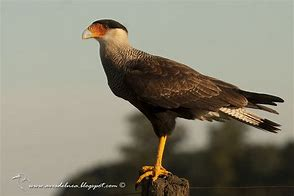
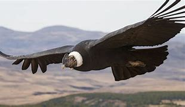

Ejemplos destacados
- Guanacos
- Ñandúes
- Águila mora
- Puma
Águila mora

El águila mora es una de las aves rapaces más emblemáticas de la región andina, reconocida por su gran tamaño y su vuelo majestuoso.
Carancho
El carancho es un ave carroñera muy común en la Patagonia, fácilmente identificable por su plumaje oscuro y su comportamiento oportunista.
Cóndor andino
El cóndor andino es el ave voladora más grande del mundo y símbolo de los Andes, famoso por su envergadura y su vuelo en las alturas.